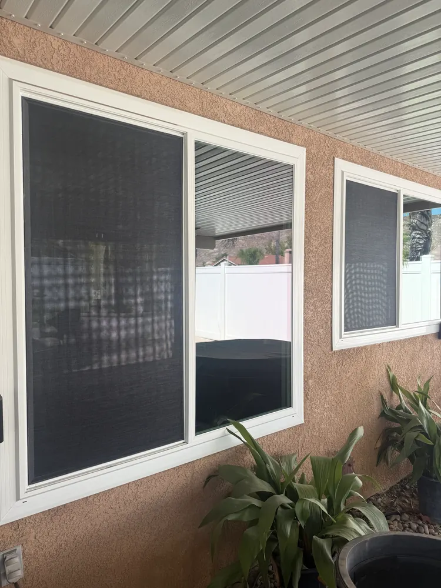

Home/Window Screen Repair
Serving the High DesertWindow Screen Repair & Replacement
Mobile screen repair, with the service plan confirmed for your job.
Torn mesh, bent frames or missing screens? We review the condition and explain re-meshing or replacement options. Screen-only jobs use pickup and inspection, followed by a separate confirmed return for drop-off, installation and only the cleaning in your written agreement. Combined-service arrangements are confirmed for your job.
Read our Google reviews · Free inspection · Satisfaction guaranteed
Interested in seeing window screen repair we've done?
A small selection from our project library. Tap a photograph for a closer look.
 Screen frames at a project
Screen frames at a project
Installed patio window screens Sliding screen door
Sliding screen door


Like what you see? Request your service below.
Choose the right screen service
Choose a useful repair, an upgraded mesh or a new custom frame. Starting prices are per eligible window screen; a $149 minimum applies when screens are the only service. Oversize openings, sliding doors, specialty fabrication and additional hardware need assessment.
Screen-only work uses two visits: pickup and inspection, followed by drop-off, installation and only the cleaning in your written agreement. Both dates are requested until Tony confirms them.
Tell Tony what your property needs
Choose one or more services and a preferred day. Tony confirms the scope, final price and appointment personally. No payment is taken here.
A screen that fits, with an even finish
A good screen needs a frame that fits the opening and mesh held at an even tension. We check the frame, corners and retaining clips, then recommend re-meshing a sound frame or replacing a bent or missing frame. Choose charcoal fiberglass or the heavier vinyl-coated polyester all-weather material. We explain the view, airflow and daylight tradeoffs before quoting the work.
Do I need new mesh or a new frame?
A straight frame with sound corners may only need new mesh and spline. Bent, damaged or missing frames need a different scope. Your written quote identifies re-meshing and frame replacement separately.
Is all-weather mesh pet-proof, and is there a minimum?
All-weather mesh is a material option, not a promise that pets cannot damage it. Screen-only visits have the existing $149 minimum; discounts do not reduce that floor. Adding screen work to another service is priced in that quote.
All-weather material · Frame replacement
See your service options and request a quote
Your requested day is confirmed by Tony after availability is reviewed.
A torn screen isn't a small thing
Between UV exposure that runs most of the year, wind-driven grit and the swing between a summer afternoon and a winter night, mesh goes brittle and frames warp faster out here than almost anywhere. Most people put up with torn screens for years because it seems too small to call someone about. Here's what it's actually costing you:
- Dust goes straight into the house A torn screen is an open door for High Desert grit. More cleaning inside, dirtier windows outside.
- Sagging screens rattle in the wind Bad tension turns every windy afternoon into a percussion section on your window frames.
- It finishes the front of the house Tight, even screens make the whole front of the house look sharp from the street.
Confirm the service arrangement before booking
Screen-only jobs use pickup and inspection, followed by a separate confirmed return for drop-off, installation and only the cleaning in your written agreement. Combined-service arrangements are confirmed for your job.
Strip & inspect
The screen comes out and the frame gets stripped, cleaned and checked. If it's bent, corroded or broken at the corners, we say so and quote a suitable new custom frame rather than re-meshing an unsuitable one.
Cut & tension
New mesh cut and tensioned properly. We fit the mesh and spline to the frame, check the tension and inspect the finish before returning the screen.
Seat & reinstall
Fresh spline is seated and the screen is checked for fit. Screen-only jobs use pickup and inspection, followed by a separate confirmed return for drop-off, installation and only the cleaning in your written agreement. Combined-service arrangements are confirmed for your job.
Pick the right mesh for the window
Standard insect mesh and solar-control mesh serve different needs. A usable existing frame may only need new mesh. For sun-facing windows, All-Weather Solar-Control Mesh provides additional shading, with changes to outward visibility, airflow and incoming light. We inspect the screen and help you choose a suitable option.
- All-Weather Solar-Control Mesh, from $64.99 using a usable frame Durable vinyl-coated polyester with pet-resistant, fade-resistant and mildew-resistant characteristics. It provides additional shade and can reduce direct solar heat and glare. We explain view, airflow and daylight tradeoffs before quoting.
- Standard fiberglass, charcoal, $53.99 per screen Clearest view from inside, and good airflow. The same class of mesh your builder used, installed properly and tensioned right. Fine for shaded windows and anywhere the wind does not hit.
- Shade, view and airflow Solar-control mesh provides additional shade for sun-facing windows. Its denser weave changes outward visibility, airflow and incoming light. Comfort depends on the home and exposure; utility savings are not guaranteed.
- Sliding screen door re-meshing For screen-only door work, we arrange pickup and inspection followed by a separate confirmed return. Door condition and hardware are assessed first. Door screens are estimated at about double a window screen, $107.98, or $129.98 all weather.
- New frames when the old one is done Bent, corroded or broken at the corners? Sometimes a frame is not worth re-meshing. We will say so and quote a replacement instead of charging you for work that will not last.
What it costs
Standard Re-Mesh from $53.99 · All-Weather Upgrade from $64.99 · Full Upgrade from $84.99 · $149 screen-only minimum
- Frame stripped, cleaned and inspected
- New mesh cut and properly tensioned
- Fresh spline, with return and reinstallation arranged for your job
- Charcoal fiberglass, all weather and solar mesh options
- Warranty coverage follows the written quote. Any applicable coverage, exclusions and service terms are stated in your written quote.
The $149 minimum is why most people do all their screens at once. It works out better per screen and the house looks finished. Booking screens at the same time as a window cleaning is the most efficient way to do it, since we're already there. The written agreement states any material and installation coverage and exclusions.
Window screen repair in your city
Every city we cover has its own conditions. These pages go into what changes where.
Window Screen Repair in Hesperia
What is different about window screen repair on Hesperia homes, and what it costs there.
Window Screen Repair in Victorville
What is different about window screen repair on Victorville homes, and what it costs there.
Window Screen Repair in Apple Valley
What is different about window screen repair on Apple Valley homes, and what it costs there.
Window Screen Repair in Oak Hills
What is different about window screen repair on Oak Hills homes, and what it costs there.
Window Screen Repair in Adelanto
What is different about window screen repair on Adelanto homes, and what it costs there.
Window Screen Repair in Phelan
What is different about window screen repair on Phelan homes, and what it costs there.
Related pages
Window Screen Replacement
Full Upgrade with solar-control mesh and a new custom frame, from $84.99. Construction, return and fitting arrangements are confirmed for your job. Read more
All Weather Screen Mesh
The mesh we recommend on every sun facing window up here. Read more
Sliding Screen Door Repair
Patio screen door re-meshing, with any roller or track work assessed and quoted separately. Service method and timing are confirmed for your job. Read more
Window screen repair questions
How much does window screen repair cost?
Standard Re-Mesh starts at $53.99 with a usable existing frame. All-Weather Upgrade starts at $64.99 with a usable frame. Full Upgrade starts at $84.99 with All-Weather Solar-Control Mesh and a new custom frame. The screen-only minimum is $149 and discounts do not reduce it. Oversize screens, sliding doors, specialty fabrication and extra hardware are assessed separately.
Can you repair just one screen?
Yes, one screen or every screen on the house, at the same price a screen. If screens are the only work that visit there is a $149 job minimum. Add them to a window cleaning and there is no minimum.
Can you repair just a small tear?
Usually not worth it. A patch is visible, it doesn't hold tension, and the surrounding mesh is the same age. Re-meshing the whole screen costs little more and looks correct.
How long does each screen take?
Screen-only work uses two appointments: pickup and inspection, then a separate confirmed return for drop-off, installation and only the cleaning in your written agreement. You can request a return date or let Tony confirm it after inspection. Requested dates are not confirmed bookings; pickup is not completed work. Combined-service arrangements are confirmed for the job.
Do you make screens for sliding doors?
Yes. We assess the door and discuss standard insect mesh or All-Weather Solar-Control Mesh. Pet-resistant does not mean pet-proof, and rollers, handles or bent frames need a separate assessment.
What about sun damaged frames?
We inspect and tell you honestly. If a frame is too far gone, we quote a replacement rather than putting good mesh on a bad frame.
Do I need to remove the screens first?
We confirm removal, repair, return and reinstallation arrangements in your quote. On-site work or pickup and return depends on the job.
Pick your city
What we run into in each town, and photos of real jobs we have done there.